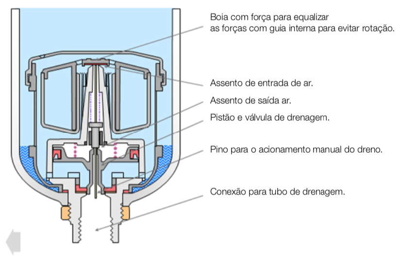

Pneumática:: Introdução
Princípios / Conceitos básicos:
Pressão, Fluidos, Vazão e Lei de Continuidade, Trabalho e Potência.
Necessário para Avaliação de circuitos pneumáticos.
Vídeo introdutório da Neheyler Mechatronics (espanhol; 10:24).
Presente em processos industriais que trabalham com cilindros, pistões, válvulas.
Circuitos:
Circuitos Pneumáticos: depende de fluídos para realizar trabalho, neste caso, gás (ar-comprimido);
Circuitos Hidráulicos: depende de fluídos para realizar trabalho, mas neste caso, líquidos (óleo).
História:
O século XIX marca o início do estudo do comportamento e propriedades que envolvem a pneumática. Porém, somente após 1950 é que ela foi real- mente introduzida no meio industrial. Antes disso, era utilizada na indústria de mineração, construção civil e indústria ferroviária (freios a ar comprimido).
O ar comprimido utilizado como forma de energia é obtido através de com- pressores e será conduzido até os atuadores (cilindros e motores pneumáticos).
O uso do ar comprimido de forma generalizada na indústria, começou com a necessidade cada vez maior da automatização e da racionalização dos processos de trabalho.
Atualmente, o ar comprimido como meio de trabalho, tornou-se indispensá- vel, e podemos encontrá-lo em diversos segmentos, entre os quais:
a) Automotivo – freios, acionamentos de portas de ônibus. b) Indústria em geral – movimento, prensamento, elevação, transformação e controle. c) Transporte naval – comando de válvulas, sinais sonoros. d) Indústria química e petroquímica – controle de fluidos, acionamentos em áreas classificadas. e) Área médica/dentária – máquinas para cirurgia, furadeiras dentárias, técnicas de vácuo.
Propriedades do ar-comprimido
Propriedades positivas (vantagens) do ar-comprimido:
| Propriedade | Descrição |
|---|---|
| Disponibilidade | O ar, para ser comprimido, é encontrado em quantidades ilimitadas, praticamente em todos os lugares. |
| Transporte | O AC é facilmente transportável por tubulações, mesmo para distâncias grandes. Não há necessidade de preocupação com o retorno de ar. |
| Armazenamento | O AC pode ser armazenado em reservatórios para utilização posterior ou em emergên- cias, quando os compressores se encontram desligados. |
| Temperatura | O trabalho realizado com AC é insensível às oscilações da temperatura. Isso garante também, em situações térmicas extremas, um funcionamento seguro. |
| Segurança | Não existe o perigo de explosão ou incêndio. Portanto, é seguro contra explosão e eletrocussão, sendo indicado para aplicações especiais. |
| Limpeza | O AC é limpo. O ar, que eventualmente escapa das tubulações e outros elementos inadequadamente vedados, não polui o ambiente. Esta é uma exigência nas indústrias alimentícias, têxteis, química, eletrônicas. |
| Construção de elementos | Os elementos de trabalho são de construção simples e podem ser obtidos a custos vantajosos. |
| Velocidade | O AC é um meio de trabalho rápido, que permite alcançar altas velocidades de trabalho. |
| Regulagem | As velocidades e forças de trabalho dos elementos a AC são reguláveis, sem escala. Para isso são exigidos elementos especiais denominados reguladoras de pressão e fluxo. |
| Seguro contra sobrecargas | Elementos e ferramentas a AC são carregáveis até a parada total e, portanto, seguros contra sobrecargas. |
Mas há fatores que limitam o uso de pneumática. O ar-comprimido é uma forma de energia cara.
Propriedades negativas (ou desvantagens) do ar-comprimido:
| Propriedade | Descrição |
|---|---|
| Preparação | O ar comprimido requer uma boa preparação. Impureza e umidade devem ser evitadas, pois provocam desgastes nos elementos pneumáticos, oxidação nas tubulações e projeção de óxidos. |
| Compressibilidade | Não é possível manter uniforme e constante as velocidades dos pistões mediante ar comprimido. Quando é exigível, recorre-se a dispositivos especiais. |
| Forças | O ar comprimido é econômico somente até determinada força, limitado pela pressão normal de trabalho de 700 kPa (7 bar), e pelo curso e velocidade (o limite está fixado entre 2000 e 3000 N (2000 a 3000 kPa). |
| Escape de ar | O escape de ar é ruidoso. Mas, com o desenvolvimento de silenciadores, esse problema está solucionado. |
| Custos | O ar comprimido é uma fonte de energia muito cara. Porém, o alto custo de energia é compensado pelo custo baixo da instalação e pela rentabilidade do ciclo de trabalho. |
Vantagens da implantação da automação pneumática
- Incremento da produção com investimentos relativamente pequenos.
- Redução de custos operacionais. A rapidez nos movimentos pneumáticos e liberação de operários de operações repetitivas possibilitam o aumento do ritmo de trabalho, da produtividade e, portanto, um menor custo operacional.
- Robustez dos componentes pneumáticos. A robustez inerente aos con- troles pneumáticos torna-os relativamente insensíveis a vibrações e gol- pes, permitindo que ações mecânicas do próprio processo sirvam de sinal para as diversas sequências de operação. São de fácil manutenção.
- Facilidade de implantação. Pequenas modificações nas máquinas con- vencionais aliadas à disponibilidade de ar comprimido são os requisitos necessários para a implantação dos controles pneumáticos.
- Resistência a ambientes hostis. Poeira, atmosfera corrosiva, submersão em líquidos, raramente prejudicam os componentes pneumáticos, quan- do projetados para esta finalidade.
- Simplicidade de manipulação. Os controles pneumáticos não necessitam de operários altamente especializados para a sua manipulação.
- Segurança. Como os equipamentos pneumáticos envolvem sempre pres- sões moderadas, tornam-se seguros contra possíveis acidentes, com pes- soas e com o próprio equipamento, além de evitar problemas de explosão.
- Redução do número de acidentes. A fadiga é um dos principais fatores que favorecem acidentes. A implantação de controles pneumáticos reduz o seu número, liberação de operações repetitivas (LER).
Limitações da pneumática
- O ar comprimido necessita de uma boa preparação para realizar o trabalho proposto: remoção de impurezas, eliminação de umidade para evitar corrosão nos equipamentos, engates ou travamentos e maiores desgas- tes nas partes móveis dos sistemas.
- Os componentes pneumáticos são normalmente projetados e utilizados a uma pressão máxima de 1723,6 kPa. Portanto, as forças envolvidas são pequenas se comparadas a outros sistemas. Assim, não é conveniente o uso de controles pneumáticos em operações de extrusão de metais. Provavelmente, o seu uso seja vantajoso para recolher ou transportar as barras extrudadas.
- Velocidades muito baixas são difíceis de serem obtidas com ar comprimido devido às suas propriedades físicas. Nesse caso, recorre-se a sistemas mistos hidráulicos e pneumáticos.
- O ar é um fluido altamente compressível, portanto, é difícil obterem-se paradas intermediárias e velocidades uniformes.
Circuitos Pneumáticos
Trabalham com ar à pressão.
Componentes básicos (preparação de ar-comprimido):

Grupo compressor: elementos (1) e (2): captura e pressuriza ar do meio-ambiente;
Unidade de manutenção (conservação): (3) ou "FRL": se responsabiliza por limpar e preparar o ar-comprimido;
Válvulas (4): Distribuem (direcionam) o ar-comprimido. Exemplo animado da RealPars...
Cilindros (5): atuadores encarregados de realizar o trabalho.
O ar que respiramos, composto principalmente por nitrogênio e oxigênio, é elástico, compreensível e ocupa todo o espaço onde está contido.
Contaminação do ar atmosférico
O ar atmosférico é uma mistura de gases, principalmente de Oxigênio e Ni- trogênio, e contém contaminantes de três tipos básicos: água, óleo, poeira.
A contaminação por água e poeira é oriunda da própria atmosfera. O óleo é originado do processo de compressão da maioria dos compressores.
As partículas de poeira, em geral abrasivas, e o óleo queimado no ambiente de lubrificação do compressor, são responsáveis por manchas nos produtos. A água é responsável por outra série de inconvenientes.
O compressor, ao admitir ar, aspira também os seus compostos e, ao comprimir, adiciona a esta mistura calor e óleo lubrificante.
Os gases sempre permanecem em seu estado nas temperaturas e pressões normais encontradas no emprego da pneumática. Componentes com água sofrerão condensação e ocasionarão problemas:
Consequências da água condensada em tubulações:
- Oxidação da tubulação e componentes pneumáticos;
- Destruição da película lubrificante existente entre as duas superfícies em contato, acarretando desgaste prematuro e reduzindo a vida útil das peças, válvulas, cilindros;
- Prejudica a produção de peças;
- Arrasta partículas sólidas que prejudicarão o funcionamento dos componentes pneumáticos;
- Aumenta o índice de manutenção;
- Não é possível a aplicação em equipamentos de pulverização;
- Provoca golpes de aríete nas superfícies adjacentes.
Golpes de ariete: são variações de pressão decorrentes de variações da vazão, causadas por alguma perturbação, voluntária ou involuntária, que se imponha ao fluxo de líquidos em condutos, tais como operações de abertura ou fechamento de válvulas.
Sabemos que a quantidade de água absorvida pelo ar está relacionada com a temperatura e volume. Quanto maior a temperatura maior é a quantidadede água que o ar atmosférico pode conter.
Portanto, é importante que grande parte da água e resíduos de óleo sejam removidos do ar para evitar redução de capacidade e vida útil de todos os dispositivos e máquinas pneumáticas.
Resfriamento do ar (after coller)
Para resolver de maneira eficaz o problema inicial da água nas instalações de ar comprimido o equipamento mais indicado é o resfriador posterior, localizado entre a descarga do compressor e o reservatório.
A maior temperatura do ar comprimido é na descarga do compressor.
O resfriador posterior é simplesmente um trocador de calor utilizado para resfriar o ar comprimido. Como consequência deste resfriamento permite-se retirar cerca de 75% a 90% do vapor de água contido no ar, bem como va- pores de óleo, além de evitar que a linha de distribuição sofra uma dilatação, causada pela alta temperatura de descarga do ar.
Reservatório de ar comprimido
Um sistema de ar comprimido é dotado de um ou mais reservatórios.
Funções do reservatório:
- Armazenar o ar comprimido;
- Resfriar o ar auxilia a eliminação do condensado;
- Compensar as flutuações de pressão e demanda em todo o sistema de distribuição;
- Estabilizar o fluxo de ar comprimido;
- Controlar as marchas dos compressores.
Condensado: é o vapor de ar que ao ser resfriado sofre condensação. O condensado é então removido no separador centrífugo ou no reservatório de ar, adjacente ao compressor.
Os reservatórios são construídos no Brasil conforme a norma PNB-109 da ABNT (ou norma NR-13 que trata sobre caldeiras, vasos de pressão, tubulações e tanques metálicos de armazenamento -- uma versão comentada pelo SESI/Salvador de 2008 pode ser encontrada aqui).
Nenhum reservatório deve operar com uma pressão acima da Pressão Máxima de Trabalho Permitida (PMTP), exceto quando a válvula de segurança estiver dando passagem. Nesta condição, a pressão não deve ser excedida em mais de 6% do seu valor.
Os reservatórios devem ser instalados de modo que todos drenos, conexões e aberturas de inspeção sejam facilmente acessíveis.
Elementos do reservatório:
- Manômetro - Indicador de pressão;
- Válvula de bloqueio do manômetro;
- Saída de ar do reservatório;
- Entrada de ar do reservatório;
- Placa de identificação;
- Válvula de alívio;
- Boca de visita;
- Dreno.
Em nenhuma condição o reservatório deve ser enterrado ou instalado em local de difícil acesso. Deve ser instalado de preferência fora da casa de compressores, na sombra para facilitar a condensação da umidade e do óleo contidos no ar comprimido.
Deve possuir um dreno no ponto mais baixo para fazer a remoção do con- densado acumulado, e deverá ser preferencialmente automático.
Os reservatórios deverão ainda possuir manômetro (indicador de pressão), válvulas de segurança, e deverão ser submetidos a uma prova de pressão hidrostática antes da utilização, quando sujeitos a acidentes ou modificações e também periodicamente.
Desumidificação do ar
É necessário eliminar ou reduzir ao máximo a umidade do ar comprimido, sendo difícil e onerosa a secagem completa.
Ar seco industrial não é aquele totalmente isento de água. É o ar que, após um processo de desidratação, flui com um conteúdo de umidade resídual de tal ordem que possa ser utilizado sem inconvenientes.
A aquisição de um secador de ar comprimido pode figurar no orçamento de uma empresa como um alto investimento, podendo chegar a 25% do valor total de uma instalação de ar comprimido. Porém, é plenamente justificável este investimento, com a redução dos custos de manutenção do sistema, sendo evitado ou minimizado:
- Substituição periódica de tubulações;
- Substituição de componentes pneumáticos (filtros, válvulas, cilindros);
- Impossibilidade de utilização deste ar para operações de pulverização e pintura;
- Aumento de produtividade;
- Impossibilidade de utilização deste ar para operações de pulverização e pintura.
A quantidade de vapor d’água contida é uma porcentagem do ar atmosférico e é medida em Umidade Relativa (%UR). Esta porcentagem é a proporção máxima de água que pode ser mantida em forma de vapor à uma determinada temperatura:

Fatos
A ilustração à seguir mostra 4 cubos cada um representando 1 metro cúbico de ar atmosférico à 20°C. Cada um destes volumes estão com uma umidade relativa de 50% (50% UR). Isto significa que eles contém 8,7 gramas de vapor d’água, ou seja metade do máximo possível (17,4 gramas):

Quando o compressor comprimir estes quatro metros cúbicos em 1 metro cúbico haverá 4 vezes 8,7gramas, mas somente 2 vezes 8,7 gramas ficarão em forma de vapor no novo espaço de 1 m3. As outras 2 serão condensadas em gotas d’água.
4 metros cúbicos de ar à 1000 mbar de pressão atmosférica contidos em um espaço de 1 m3 produzem uma pressão de 3 barm.
17,4 gramas de água permanecem como vapor produzindo 100% UR e 17,4 gramas em forma de água condensada.
Este é um processo contínuo de tal forma que cada vez que a pressão aumentar em 1bar, um metro cúbico de ar é comprimido adicionando 8,7 gramas de água condensada.

Os meios de secagem do ar comprimido mais comuns são:
- Secagem por refrigeração;
- Secagem por absorção;
- Secagem por adsorção.
Secagem do ar
É um sistema simples e de baixo custo operacional que serve para aplicações que necessitam de ar seco.
O método de desumidificação do ar comprimido por refrigeração consiste em submeter o ar a uma temperatura suficientemente baixa, a fim de que a quantidade de água existente seja retirada em grande parte por condensação.
Além de remover a água, provoca no compartimento de resfriamento, uma emulsão com óleo lubrificante do compressor, auxiliando na remoção de certa quantidade deste óleo.
 |
|---|
Um secador de ar pode processar o ar para um ponto de orvalho um pouco acima do congelamento.
O ar úmido entra no primeiro trocador, onde é resfriado pelo ar seco que está saindo. Este entra no segundo trocador onde é resfriado. A água condensada condensado é coletado e drenado, e, quando ar resfriado sai, ele é aquecido pelo ar úmido que entra.
Secagem por absorção
É o método que utiliza em um circuito uma substância sólida, líquida ou gasosa.
Este processo é também chamado de Processo Químico de Secagem, pois é conduzido no interior de um reservatório (tanque de pressão) através de uma massa higroscópica, insolúvel ou deliquescente que absorve a umidade do ar, processando-se uma reação química.
As substâncias higroscópicas são classificadas como insolúveis quando rea- gem quimicamente com o vapor de água, sem se liquefazerem. São de- liquescentes quando, ao absorver o vapor de água, reagem e se tornam líquidas.
As principais substâncias utilizadas são: Cloreto de Cálcio, Cloreto de Lítio, Dry-o-Lite.
Com a consequente diluição das substâncias, é necessário uma reposição regular, caso contrário, o processo torna-se deficiente.
A umidade retirada e a substância diluída são depositadas na parte inferior do reservatório, junto a um dreno de onde são eliminados para a atmosfera.
Secagem por Adsorção
É semelhante ao processo de absorção, porém o processo de adsorção é re-generativo; a substância adsorvente, após estar saturada da umidade, permi-te a liberação de água quando submetida a um aquecimento regenerativo.
Processo de secagem por adsorção por torres duplas:
É o tipo mais comum. As torres são preenchidas com Óxido de Silício – SiO
Através de uma válvula direcional, o ar úmido é orientado para uma torre, onde haverá a secagem do ar. Na outra torre ocorrerá a regeneração da subs- tância adsorvente, que poderá ser feita por injeção de ar quente, na maioria dos casos, por resistores e circulação de ar quente. Havendo o aquecimento da substância, provocaremos a evaporação do líquido adsorvido. Por meio de um fluxo de ar seco a água em forma de vapor é arrastada para a atmosfera.
Terminando um período de trabalho pré-estabelecido, ocorre a inversão das funções das torres, por controle manual ou automático. A torre que secava o ar passa a ser regenerada e a outra inicia a secagem.
Na saída de ar deve ser prevista a colocação de um filtro para eliminar poeira das substâncias, prejudicial para os componentes pneumáticos, bem como deve ser montado um filtro de carvão ativado antes da entrada do secador, para eliminar os resíduos de óleo. O óleo quando entra em contato com as substâncias de secagem causam sua impregnação, reduzindo consideravel- mente o seu poder de retenção de umidade.
Segue figura de um sistema completo de processamento de ar comprimido:
Onde (na figura): 1) filtro de admissão; 2) motor elétrico; 3) separador de condensado; 4) compressor; 5) reservatório; 6) resfriador intermediário; 7) secador (frigorífico); 8) resfriador posterior (á água).
Rede de Distribuição de ar-comprimido
Aplicar para cada máquina ou dispositivo automatizado um compressor próprio é possível ou exigível somente em casos esporádicos e isolados. Onde existem vários pontos de aplicação, o processo mais conveniente racional é efetuar a distribuição do ar comprimido, situando as tomadas nas proximidades dos utilizadores. A rede de distribuição de AC compreende todas as tubulações que saem do reservatório passando pelo secador e, que unidas, orientam o ar comprimido até os pontos individuais de utilização.
As redes de distribuição são normalmente formadas de tubos de aço carbono ou galvanizado, sendo hoje possível a montagem de redes de ar comprimido executadas em tubos e conexões de PVC especiais.
A rede possui duas funções básicas:
- Comunicar a fonte produtora com os equipamentos consumidores;
- Funcionar como um reservatório para atender as exigências locais.
Um sistema de distribuição perfeitamente executado deve apresentar os seguintes requisitos:
- Pequena perda de pressão entre o compressor e as partes de consumo, a fim de manter a pressão dentro de limites toleráveis, em conformidade com as exigências das aplicações;
- Não apresentar escape de ar, pois provoca perda de energia;
- Apresentar grande capacidade de realizar separação de condensado.
Ao serem efetuados o projeto e a instalação de uma planta qualquer de distribuição é necessário levar em consideração certos preceitos. O não cumprimento de certas bases é contraproducente e aumenta sensivelmente a necessidade de manutenção.
Lay-out da rede de distribuição
Apresenta a rede principal de distribuição, suas ramificações, todos os pon- tos de consumo, incluindo futuras ampliações. Indica qual a pressão destes pontos e a posição de válvulas de fechamento, moduladoras, conexões, cur- vaturas, separadores de condensado.
Topologia da rede de distribuição
Em relação ao tipo de linha a ser executada, anel fechado ou circuito aberto, deve-se analisar as condições favoráveis e desfavoráveis de cada uma.
Geralmente a rede de distribuição é do tipo circuito fechado, formando um anel. Deste anel partem as ramificações para os diferentes pontos de consumo. O anel fechado auxilia na manutenção de uma pressão constante, além de proporcionar uma distribuição mais uniforme do ar comprimido para os consumos intermitentes, dificulta porém a separação da umidade, porque o fluxo não possui uma direção definida. Dependendo do local de consumo, circula em duas direções.
O circuito aberto é utilizado onde o transporte de materiais e peças é aéreo, para alimentação de pontos isolados, pontos distantes.
Válvulas de bloqueio na linha de distribuição
Devem ser previstas na rede e distribuição, para permitir a divisão desta em seções, especialmente em casos de grandes redes, fazendo que as seções tornem-se isoladas para inspeção, modificações ou manutenção. Assim, evi- tamos que outras seções sejam simultaneamente atingidas.
Ligações entre os tubos
São realizadas por rosca, solda, flange, acoplamento rápido, devendo apre- sentar a mais perfeita vedação.
As ligações roscadas são comuns, devido ao baixo custo e facilidade de mon- tagem e desmontagem. Para evitar vazamentos é necessário a utilização da fita veda rosca (teflon), devido às imperfeições existentes na confecção das roscas.
A união realizada por solda oferece menor possibilidade de vazamento, se comparada à união roscada, apesar de um custo inicial maior. As uniões soldadas devem estar cercadas de certos cuidados, as escamas de óxido devem ser retiradas do interior do tubo, o cordão de solda deve ser o mais uniforme possível.
Para tubos com diâmetro nominal (DN) até 2” – uniões roscadas ou com acessórios para solda de soquete.
Para tubos acima de 2” – uniões para solda de topo e acessórios com montagem entre flanges, principalmente válvulas e separadores. Para instalações provisórias podem ser utilizadas mangueiras com sistema de acoplamento rápido, porém normalmente o custo deste sistema é maior do que tubulações definitivas.
Inclinação da rede de distribuição
As tubulações devem possuir uma inclinação de 0,5 a 2%, no sentido de fluxo, para direcionar condensado e óxidos para um ponto de coleta, evitando a formação de bolsões de umidade.
Este ponto de coleta (purgadores) é denominado dreno, que são colocados nos pontos mais baixos da tubulação e devem ser preferencialmente automáticos. Se a rede é extensa, devem ser previstos pontos de coleta de condensado com drenos, a cada 20 ou 30 metros de tubulação.
Tomadas de ar comprimido
Devem ser feitas pela parte superior da tubulação principal, para evitar que trabalhem como coletores de condensado. Este tipo de montagem é chamado pescoço de cisne.
Vazamentos de ar comprimido
As quantidades de ar comprimido perdidas através de pequenos furos, aco- plamentos com folgas, vedações defeituosas, mesmo em redes com boa manutenção, podem representar 10% ou mais de toda a energia consumida pelos compressores. Em redes velhas e sem manutenção pode atingir valores superiores a 25%.
A importância econômica desta contínua perda de ar comprimido torna-se mais evidente quando comparada com o consumo de um equipamento e a potência necessária para realizar a compressão.
É impossível eliminar por completo todos os vazamentos, porém estes de- vem ser reduzidos ao máximo com uma manutenção preventiva do sistema 3 a 5 vezes por ano, sendo verificadas juntas, engates, mangueiras, tubos, válvulas, aperto de conexões, eliminação de ramais de distribuição fora de uso.
Segue uma tabela relacionando vazamento
| Ø Furo mm | Ø Furo pol | Perda de ar KPa-m^3/s | Perda de ar PSI -c.f.m | Potência cv | Potência KW |
|---|---|---|---|---|---|
| 1 | 3/64 | 0,001 | 2 | 0,4 | 0,3 |
| 3 | 1/8 | 0,1 | 21 | 4,2 | 3,1 |
| 5 | 3/16 | 0,027 | 57 | 11,2 | 8,3 |
| 10 | 3/8 | 0,105 | 220 | 44 | 33 |
Tubos
Os tubos podem ser metálicos ou não metálicos:
Metálicos: tubos de latão, cobre, aço inoxidável e aço trefilado, até diâ- metro de 1” usados em instalações especiais, possuindo montagens rígidas, estão presentes em locais onde a temperatura, pressão, agressão química ou física (abrasão ou choques) são constantes (indústrias bioquímicas). Os tubos de cobre e latão possuem grande flexibilidade.
Não metálicos: materiais sintéticos, que apresentam boas características químicas, mecânicas e flexibilidade. Podem ser obtidos em diversas cores, o que muito auxilia em montagens complexas, e em diâmetros externos que variam de 4 a16 mm, assim como, medidas equivalentes em polegadas.
Tubos mais comuns são de polietileno, poliuretano, nylon e borracha com lona.
Alumas Considerações sobre redes de distribuição de AC
- Instalação em anel;
- Purgador em cada canto para coletar e drenar a água;
- Tubo com inclinação para os cantos;
- Tomadas de ar por cima para evitar a descida da água;
- FRL (Unidade de manutenção (conservação)) antes de cada aplicação.
Purgador Automático
| Aparência | Símbolo |
|---|---|
 | Símbolo |
- Purgador automático em cada canto;
- Água drenada automaticamente quando a pressão está presente e também quando desligada;
- Deve ser montado com válvula de isolamento para manutenção;
- Incorpora uma tela para reter grandes partículas;
- Inclui uma válvula de sangria para despressurizar o copo
Dreno Automático:
| Aparência | Símbolo |
|---|---|
|  |
- Quando o nível de água sobe a válvula abre para drenar e fecha novamente;
- Quando não há pressão a válvula abre para drenar;
- Montados nos filtros e purgadores;
- Tela de nylon de 500 μm para evitar o entupimento por partículas sólidas;
- “Zona morta” para depositar as partículas grandes.
Operação:
Quando o ar entra no copo, a pressão sobe o pistão que abre o assento de entrada para equalizar as forças e fechar a válvula de drenagem. A equalização ocorre com uma diferença de 5 psig entre o lado superior e inferior pistão devido à força da mola.
A boia veda o ar no topo do pistão e o assento de saída está fechado.
O nível de água sobe, mas não o suficiente para levantar a boia. A força que a mantém para baixo é a pressão agindo na área do assento de entrada. Desta maneira, a água assume a mesma pressão do ar:
A água sobe o suficiente para levantar a boia e a pressão no topo do pistão equaliza com o lado inferior. A força da mola empurra o pistão para baixo abrindo o dreno e a água é drenada sob pressão.
O assento de saída abre, mas a entrada de ar é mais rápida e mantém o pistão aberto.

FRLs
FRLs ou Unidade de manutenção (conservação).
Quando citamos FRL estamos nos referindo a 3 itens montados em conjunto:
- filtro;
- regulador;
- lubrificador.
Estes items formam a unidade que prepara o ar comprimido exatamente antes do equipamento pneumático.
O FRL proporciona ar limpo e seco, a pressão no nível correto e final partículas de óleo para lubrificar válvulas, atuadores e ferramentas pneumáticas.
Um modo conveniente de usar estes componentes é um sistema modular.
Filtros
Têm a função de separar e coletar os contaminantes.
Aletas em ângulo forçam o ar a entrar girando no compo, gotas de água e grandes partículas são jogadas contra ele e vão para o fundo. Um separador evita que a turbulência jogue água contra o elemento filtrante, o qual retém as partículas finas.
| Dreno manual: | Dreno com copo de metal: |
|---|---|
 |  |
| Uma inspeção visual diária é requerida para evitar que o nível de água atinja o elemento filtrante. Um dreno de 1/4 de volta permite ejetar os contaminantes sob pressão. A rosca no dreno permite conectar tubo para coletar os contaminantes. | Para usar em: - acima de 50° C; - acima de 10 bar; - solventes próximos. A escolha recomendada para G=1/2 ou maior. Copo de metal com lentes prismáticas no visor. A refração indica claramente o nível de contaminantes. |
No caso do dreno com copo metálico:

Quando o elemento filtrante começa a entupir o fluxo decresce. A diferença de pressão age levantando o indicador vermelho. A primeira indicação aparece a 0,3bar e a total quando atinge 1bar. O elemento filtrante deve ser limpo ou trocado.
Dreno automático:
Sob pressão, a boia levanta quando o nível de água sobe, o que causa a abertura do dreno e a água é ejetada. A boia desce e o dreno fecha. Quando a pressão é desligada, o dreno abre automaticamente e a água sai por gravidade
Filtros Coalescentes
Coalescente: que se une intensamente; aderente, aglutinante.
Usados para aplicações onde o ar tem que ser excepcionalmente limpo e livre de óleo.
Remove partículas sub-micrométricas de até 0.01 μm. Deve ser usado um pré-filtro de 5 μm para proteger o elemento filtrante e aumentar sua vida útil.
Para uso em processamento de alimentos, mancais de ar, pinturas, etc.

Funcionamento:
- O ar entra pelo centro e passa através do filtro para a superfície externa;
- A chapa de inox perfurada suporta até 10bar de pressão diferencial;
- Elemento: borosilicato com micro fibra de vidro;
- O fluxo de ar passa por uma espuma de poliuretano que reduz a velocidade para evitar a reentrada de óleo;
- Placa final de vedação em resina;
- As taxas de fluxo são menores que no filtro de ar equivalente ou seja: 28 dm3/s comparado a 83 dm3/s para G1/2 a 6.3 bar;
- Os filtros têm uma grande área para manter baixa a velocidade do ar e evitar a reentrada do óleo na linha;
- Indicadores de vida útil monitoram a queda de pressão mostrando quando o filtro deve ser trocado.
Indicador de vida útil e elétrico
Ideal para indicação remota quando os elementos filtrantes requerem reposição. Pode ser usado para dar um sinal remoto sonoro ou visual. Para aplicações sensíveis podem desligar a máquina ou o processo quando a queda de pressão é excessiva.
Alta eficiência em remoção de óleo: Elemento coalescente de alta eficiência; Conteúdo de óleo remanescente 0.01 ppm máx a + 21oC; Remoção de partículas até 0.01 μm; Qualidade do ar ISO 8573-1 Classe 1.7.2.
Ultra alta eficiência: Carvão ativado para remoção de vapor e odor de óleo; Uma cor rosada é ativada se o elemento coalescente começar a falhar; Conteúdo de óleo remanescente 0.003 ppm máx a + 21oC; Remoção de partículas até 0.01 μm; Qualidade do ar ISO 8573-1 Classe 1.7.1.
Silenciadores Coalescentes
Para final de linha de sistemas pneumáticos; Remove partículas de óleo que são carregadas para a exaustão; Filtro com área grande mantém a velocidade do ar baixa para diminuir os ruídos.
Reguladores de Pressão
Note: Um circuito fechado é uma aplicação onde o consumo de ar não é contínuo. O fluxo de ar é intermitente tal que o sistema enche de ar e estabiliza uma pressão. Por exemplo: um atuador de simples ação.
Um regulador de pressão reduz a pressão primária P1 para uma adequada pressão de trabalho P2 (imagens à seguir).
Modo de operação:
Quando não há fluxo a válvula fecha mantendo a pressão P2 e quando há, ela abre o suficiente para também manter a pressão P2, que pode ser ajustada e monitorada pelo manômetro.
Quando a pressão desejada é alcançada a força do diafragma equaliza com a mola e fecha a válvula.
Enquanto o ar está fluindo a válvula fica aberta o suficiente para manter a pressão ajustada à demanda de fluxo, que, conforme este, aumenta a pressão sob o diafragma, decresce abrindo a válvula para manter o fluxo com a pressão próxima ao valor ajustado.
Na imagem à seguir, você vê um regulador com alívio que permite reduzir a pressão ajustada. Girando o botão no sentido anti-horário reduz a força da mola:

A força maior do diafragma empurra a mola e libera o eixo da válvula. P2 pode ir para a exaustão pelo orifício central do diafragma e girar no sentido horário para ajustar uma nova pressão.
Após atingir a pressão desejada, deve-se empurrar o botão para travar e evitar mudanças acidentais na regulagem.
Filtro Regulador
Na imagem vemos filtro e reguladore desenhados em uma única peça. Possui uma instalação mais cimpacta e é mais barato comparado a duas unidades convencionais.

O ar é filtrado e dirigido ao primário do regulador. A pressão é, então, reduzida ao valor de trabalho.
Regulador bi-direcional
A ilustração mostra um regulador bi-direcional entre o atuador e a válvula, isto permite a redução de pressão do lado frontal do atuador. Seus tipos são R72R, R74R.

Serve para aplicações onde o suprimento do regulador é ciclado e, para reverter o fluxo, o regulador tem uma válvula de retenção incorporada.
Reguladores Pilotados
Grandes reguladores exigem muita força para operar (inadequado para controle manual), são montados em locais remotos de difícil acesso.
Um regulador piloto, o qual pode ser independente ou com realimentação, é fácil de operar e enviar sinal para o regulador pilotado.
Reguladores de Precisão
Podem ser manuais, mecânicos ou pilotados. Seus tipos são R38, 11-818 e R27. Adequado para controle de processos, medição por ar e instrumentação e serve para ajuste e manutenção de pressão com precisão.
Lubrificadores

Para um eficiente funcionamento de equipamentos pneumáticos e uma longa vida útil das vedações e partes com atrito, uma lubrificação correta é essencial.
Equipamentos que permitem trabalhar sem lubrificação são pré- lubrificados na montagem e têm uma expectativa de vida útil normal. Isto não impede porém de usar o ar lubrificado o que provavelmente aumentaria sua vida útil.
Para um melhor resultado, uma fina lubrificação é continuamente aplicada por um lubrificador. Isto é particularmente relevante em aplicações adversas onde possam existir altas velocidades e altas temperaturas operando ou onde a qualidade do ar é baixa.
Válvulas, atuadores e acessórios em uma aplicação típica podem operar a diferentes taxas e freqüências, e requerem diferentes taxas de lubrificação. O lubrificador de ar proporciona um método conveniente de satisfazer estas demandas.
No lubrificador as gotas de óleo são atomizadas em minúsculas partículas que formam uma fina mistura ar/óleo para lubrificar o sistema. A quantidade de óleo fornecida é ajustada automaticamente pelas mudanças de fluxo. O resultado é uma constante densidade de lubrificação. O ajuste de gotas por metro cúbico de ar terá a mesma eficiência em qualquer taxa de fluxo.
POdem ser encontrados 2 tipos de lubrificadores: o convencional Oil-Fog (cúpula verde) e o outro Micro-Fog (cúpula vermelha). Ambos são facilmente ajustados para uma determinada densidade de lubrificação.
Os lubrificadores Oil Fog são freqüentemente referidos como unidades de alta taxa de lubrificação. Todas as gotas vistas na cúpula visora (verde) entram na corrente de ar atomizadas e o tamanho das partículas de óleo são adequadas para lubrificar pontos simples e próximos do lubrificador.
As partículas de óleo são arrastadas pelo fluxo de ar e gradualmente se condensam para proporcionar adequada lubrificação para parafusadeiras, furadeiras e outros equipamentos que requerem uma lubrificação pesada.
Lubrificadores Oil Fog
Usado para lubrificar pequenas distâncias onde a condensação é requerida rapidamente, os lubrificadores Oil Fog são adequados para ferramentas a ar, motores pneumáticos, grandes atuadores e etc. As gotas de óleo são “quebradas” na corrente de ar e todas as partículas são arrastadas pelo fluxo de ar enquanto sua taxa de gotejamento é ajustável.

As gotas de óleo visíveis na cúpula são empurradas pela diferença de pressão entre P1 e P2 enquanto o tubo sifão com retenção impede que o óleo volte para o copo quando não há fluxo.
O copo é transparente para inspecionar o nível e uma alternativa é o copo de metal com visor de lentes prismáticas.
O controle verde (figura 3) deve ser girado para ajustar o fluxo do óleo. Observe a taxa de gotejamento e ajuste 2 gotas/min a 10 dm3/s. Mude a taxa de acordo com o resultado obtido.
O sensor de fluxo flexível, progressivamente se curva conforme o fluxo aumenta. Isto controla a queda de pressão no local em proporção ao fluxo de ar.
Acompanhar pela figura anterior -- há um plug de enchimento com faces para purgar a pressão do copo:
- Abrir um pouco, esperar pelo alívio da pressão e remover o plug;
- Remover o copo (tipo baioneta), encher e recolocar com segurança;
- Recolocar o plug e apertar.
Válvula de retenção com pequeno entalhe. Fluxo muito baixo para pressurizar o copo com o plug removido.
Lubrificadores Micro-Fog
Os lubrificadores Micro-Fog são os mais utilizados e podem ser identificados pela cúpula vermelha.
As gotas de óleo vistas na cúpula desta unidade são atomizadas dentro do copo, mas somente uma pequena porcentagem das partículas produzidas entram de fato na corrente de ar.
Cerca de 10% das gotas são muito pequenas, tão finas que podem ser comparadas a uma fumaça. A taxa de gotas é 10 vezes maior que a do Oil Fog para uma mesma quantidade de óleo fornecida. O ajuste de gotejamento é 10 vezes mais rápido também já que o intervalo entre as gotas é menor.
A condensação destas partículas ocorrem gradualmente. Isto permite que sejam carregadas a grandes distâncias associadas a labirintos da tubulação, curvas e conexões que fazem parte de um típico sistema pneumático industrial.

Serve para a lubrificação onde as partículas de óleo devem alcançar pontos distantes de um intrincado sistema. Adequado para controlar circuitos, múltiplas válvulas, atuadores e sistemas. As gotas de óleo são atomizadas no copo e somente 10% deste óleo deixa o copo. As gotas atomizadas permanecem em suspensão.
As gotas de óleo visíveis na cúpula são empurradas pela diferença de pressão entre P1 e P3. Todas as gotas passam pelo gerador de neblina. A queda de pressão P3 é criada pelo venturi no gerador de neblina e somente 10% das pequenas partículas de óleo (menores de 2 μm) deixam o copo pela diferença de pressão entre P1 : P2.
O controle vermelho (acompanhar pela figura anterior) deve ser girado para ajustar o fluxo de óleo. Observe a taxa de gotejamento e ajuste 20 gotas/min a 10 dm3/s. O sensor de fluxo flexível, progressivamente se curva conforme o fluxo aumenta, o que controla a queda de pressão entre P1 : P2 para retirar o ar lubrificado do copo proporcional ao fluxo.
Devido ao alto fluxo dentro do copo o Micro-Fog não pode ser recarregado sob pressão:
- Primeiro desligar o ar e abrir a exaustão;
- Remover o copo e recarregar;
- Recolocar o copo com segurança;
- Ligar o ar.
Para recarregar sob pressão troque o plug pelo niple adaptador de enchimento .
Lubrificantes de mancais e rolamentos
O lubrificador de mancais e rolamentos Micro-Fog proporciona a lubrificação centralizada para mancais, rolamentos, correntes, engrenagens e etc. Controles podem ser instalados para iniciar e parar o lubrificador junto com a máquina.
Ele fornece uma neblina de óleo nos pontos de aplicação, cobrindo a superfície dos rolamentos ou mancais com uma fina camada de óleo reduzindo o seu consumo. O ar carrega o lubrificante através do alojamento do rolamento, reduzindo sua temperatura e contaminação, proporcionado longa vida útil. Reservatório de óleo de 2 a 20 litros conforme ASME Pressure Vessel Code Section VIII.
Válvula de Alívio
Nesta válvula, a força da mola impede que a pressão normal de ar levante o diafragma. Uma pressão excessiva levanta o diafragma para abrir a válvula e aliviar o ar para a exaustão.

Quando a pressão volta ao valor ajustado, o diafragma fecha novamente a válvula.
Válvula de Partida Suave
Aplica ar ao sistema com fluxo controlado para permitir que as partes móveis se posicionem suavemente e a 50% da pressão o fluxo total é aberto. Quando desligada o ar vai rapidamente para a exaustão e a entrada é bloqueada. Versões solenoide ou piloto de ar.

Referências:
- Pneumática Básica, IMI Precision Engineering, Norgren Limited, 2015.
- Pavani, Sergio Adalberto; Comandos Pneumáticos e Hidráulicos, e-Tec Brasil (Escola Técnica Aberta do Brasil), Colégio Técnico Industrial de Santa Maria, UFSM, Santa Maria - RS, 3a. ed., 182 p., 2010.
Sugestões de tópicos: atuadores (ou cilindros pneumáticos, válvulas, sensores, simulações (parte I). Índice geral